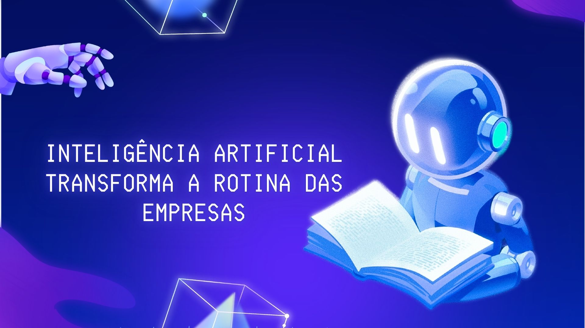

Inteligência Artificial transforma a rotina das empresas
A Inteligência Artificial (IA) deixou de ser apenas uma tendência e se tornou parte essencial do dia a dia
corporativo. Empresas de diversos setores estão utilizando soluções baseadas em IA para otimizar processos,
prever demandas e oferecer atendimento automatizado. Segundo especialistas, a automação inteligente está
ajudando profissionais a focarem em tarefas mais criativas e estratégicas, enquanto a tecnologia cuida das
operações repetitivas.

Computação em nuvem impulsiona o trabalho remoto
Com o crescimento do home office, a computação em nuvem ganhou destaque como principal aliada da
produtividade. Plataformas como Google Cloud, AWS e Microsoft Azure oferecem ferramentas que permitem
o armazenamento e compartilhamento de dados em tempo real, facilitando o trabalho em equipe de qualquer
lugar do mundo. Especialistas apontam que a tendência é que as soluções em nuvem continuem evoluindo,
tornando o ambiente corporativo ainda mais flexível e conectado.